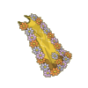
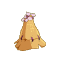
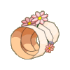
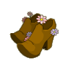
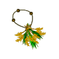
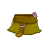
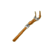

Menu barbok'you

| Niveau 80 | Cape de Shika | ||
|---|---|---|---|
| Recettes : | Caractéristiques : | Conditions : | |
|  | 50 Poils kanigrou 8 Fibre de chanvre 8 Fibre de lin 6 Poils koalak griotte 6 Poils koalak indigo 5 Etoffes dok alako 5 Etoffes kanigrou |
+26 à 35 vitalité +16 à 20 sagesse +26 à 35 chance +1 créature invocable +201 à 250 pods +2 à 3 résistance air +2 à 3 résistance eau +2 à 3 résistance feu +2 à 3 résistance neutre +2 à 3 résistance terre 4 à 5% résistance feu 4 à 5% résistance terre |
|
| Remarques : | |||
| Niveau 80 | Shikacoiffe | ||
|---|---|---|---|
| Recettes : | Caractéristiques : | Conditions : | |
|  | 50 Fleurs de kaliptus 12 Poils de koalak reinette 12 Poils de koalak indigo 4 Avoines magiques 3 Poils de koalak forestier 1 Avoine aurifère 1 Lin tempête |
+26 à 35 vitalité +21 à 30 sagesse +1 à 2 dommages +1 portée +8 à 10 prospection 3 à 5% résistance air |
aucune |
| Remarques : | |||
| Niveau 80 | Bracelet Magique de Shika | ||
|---|---|---|---|
| Recettes : | Caractéristiques : | Conditions : | |
|  | 30 Poils de gamino 10 Saphir 10 Fibre de lin 10 Ambre de bambouton 10 >Bandelette du guerrier koalak 5 Ambre d'abraknyde 1 Ambre de bambouto sacré |
+36 à 50 vitalité +21 à 30 intelligence +16 à 20 sagesse +16 à 20 chance +16 à 20 agilité +11 à 15% dommages 4 à 5% résistance air 4 à 5% résistance terre |
|
| Remarques : | |||
| Niveau 80 | Sabot de Shika | ||
|---|---|---|---|
| Recettes : | Caractéristiques : | Conditions : | |
|  | 100 Racine d'abraknyde 30 Peau de kraméléhon 10 Bois de kaliptus 3 Peau de drakoalak 3 Peau de koalak immature 2 Chanvre euphorique 2 Avoine magique |
+1 PM +36 à 50 vitalité +21 à 30 intelligence +21 à 30 chance +1 à 2 CC +1 à 2 dommages +3 à 4 résistance air +3 à 4 résistance eau +3 à 4 résistance feu 4 à 5% résistance air |
|
| Remarques : | |||
| Niveau 80 | Epis de Shika | ||
|---|---|---|---|
| Recettes : | Caractéristiques : | Conditions : | |
|  | 130 Pétales de tournesol sauvage 100 Fragement de pierre polie 50 Feuilles de tournesol sauvage 12 Ambre de bambouto 6 Avoine magique 2 Ambre ancestral 1 Ficelle en lin |
+1 PA +21 à 30 chance +26 à 40 vitalité +11 à 15 sagesse +1 à 2 CC +2 à 3 dommages +1 créature invocable +6 à 7 prospection |
|
| Remarques : | |||
| Niveau 80 | Shikature | ||
|---|---|---|---|
| Recettes : | Caractéristiques : | Conditions : | |
|  | 30 Cuirs porkass 10 Peaux de cochon de farle 10 Peaux de don dussan 10 Peaux de don dorgan 5 Cuirs du boufcool 2 Cuirs de déminoboule 1 Slip en cuir de porkass |
+21 à 30 intelligence +11 à 15 sagesse +4 à 5% dommages +5 prospection 3 à 5% résistance feu 5 à 10% résistance terre +2 à 3 résistance air +2 à 3 résistance eau +2 à 3 résistance feu |
aucune |
| Remarques : | |||
| Niveau 80 | Baton de Shika | |||
|---|---|---|---|---|
| Recettes : | Effets : | Caractéristiques : | Conditions : | |
|  | 20 Bois de kalyptus 20 Pierre de granit 12 Racines d'abra sombre 12 Ecorce d'abra sombre 10 Défenses sangliers des plaines 10 Ecorces de fourbasse 6 Tibia de koalak fossoyeur |
Dom : 15 à 26 (feu) Vole : 2 à 3 PDV (eau) +31 intelligence +28 vitalité +5% dommages +1 CC +1 dommage +36 initiative |
PA : 5 Portée : 1 à 1 Bonus CC : +10 Critique : 1/45 Echec : 1/45 |
aucune |
| Remarques : | ||||
| 1 Items | Aucun bonus |
|---|---|
| 2 Items | +10 Vitalité / +10 Intelligence |
| 3 Items | +20 Vitalité / +20 Intelligence / +10 Chance |
| 4 Items | +30 Vitalité / +30 Intelligence / +20 Chance / 5% Résistance feu |
| 5 Items | +40 Vitalité / +40 Intelligence / +30 Chance / 10% Résistance feu / +6 Résistance air +6 Résistance eau / +6 Résistance feu |
| 6 Items | +50 Vitalité / +50 Intelligence / +40 Chance / 15% Résistance feu / +8 Résistance air +8 Résistance eau / +8 Résistance feu / +20 Sagesse |
| 7 Items | +60 Vitalité / +60 Intelligence / +50 Chance / 20% Résistance feu +10 Résistance air / +10 Résistance eau / +10 Résistance feu / +30 Sagesse / +1 PM |
Dofus est un MMORPG édité par Ankama." Barbok " est un site non-officiel sans aucun lien avec Ankama.
Toutes les illustrations sont la propriété d'Ankama Studio et de Dofus. Le contenu de ce site a été rédigé initialement par Immortal, il ne s'agit que d'une remise en ligne effectuée par Eternal Games.